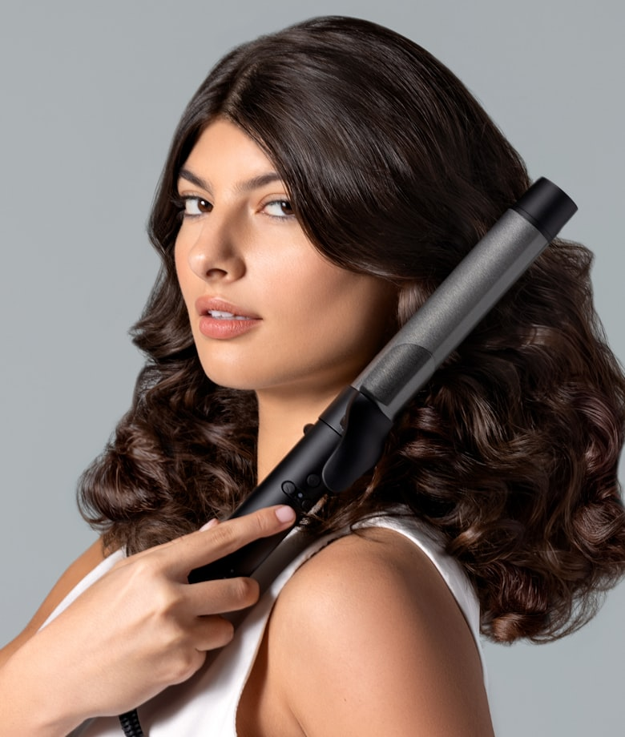
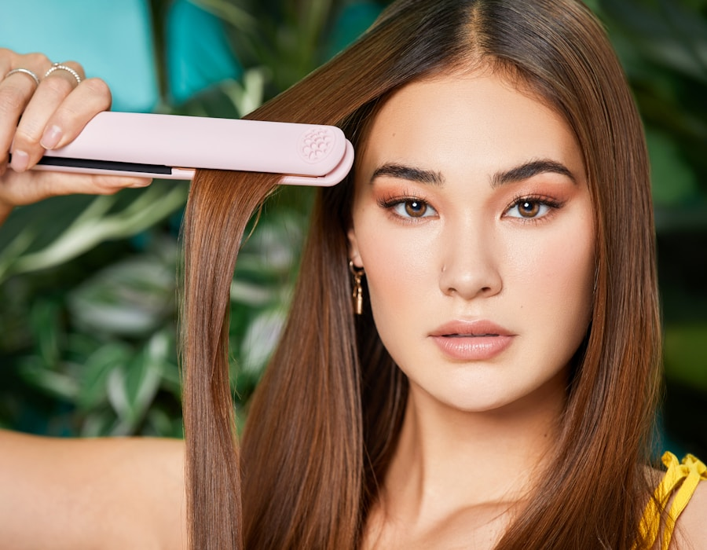

HAIR STRAIGHTENER
毎朝のパサつきを、
サロン仕上げに。
独自のナノイオン技術で、ダメージゼロの
うるツヤ髪へ。
4.8★2,300件のレビュー累計 50,000台突破

HAIR TROUBLES
こんなお悩み、
ありませんか？
そのすべての悩みに、
IONIC PRO が応えます。
BEFORE / AFTER
たった5分で、
この差。
使用前
使用後
30秒加熱完了
121%水分量UP
TECHNOLOGY
選ばれる理由、
3つの技術。
あなたの髪を変える準備は
できましたか？
USER VOICE
使った人の声
COMPARISON
他シリーズとの比較
| 仕様 | IONIC PRO本製品 | STANDARD | BASIC |
|---|
毎日のスタイリングを、
もっと心地よく。
HOW TO USE
使い方はたった
4ステップ。
使い方はシンプル。
毎日のルーティンに。
送料無料 ・ 30日間返品保証
COLORS
カラーバリエーション

ROSE GOLD
ローズゴールド
¥15,800税込・送料無料3 / 3 — ROSE GOLD
FAQ
よくある質問
SPEC
製品仕様
プロ品質を、毎日の手に。